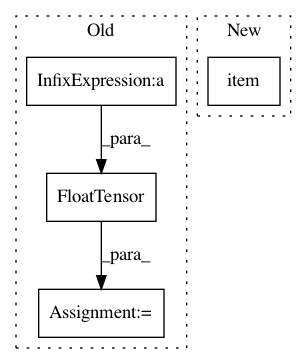

6ad34e5887f847aeb9f681e8f290d5877b76e52b,torch_geometric/nn/models/schnet.py,GaussianSmearing,__init__,#GaussianSmearing#Any#Any#Any#,97
Before Change
def __init__(self, start=0.0, stop=5.0, n_gaussians=50):
super(GaussianSmearing, self).__init__()
offsets = torch.linspace(start, stop, n_gaussians)
widths = torch.FloatTensor(
(offsets[1] - offsets[0] * torch.ones_like(offsets)))
self.register_buffer("widths", widths)
self.register_buffer("offsets", offsets)
def forward(self, distances):
After Change
def __init__(self, start=0.0, stop=5.0, num_gaussians=50):
super(GaussianSmearing, self).__init__()
offset = torch.linspace(start, stop, num_gaussians)
self.coeff = -0.5 / (offset[1] - offset[0]).item()**2
self.register_buffer("offset", offset)
def forward(self, dist):
In pattern: SUPERPATTERN
Frequency: 3
Non-data size: 4
Instances
Project Name: rusty1s/pytorch_geometric
Commit Name: 6ad34e5887f847aeb9f681e8f290d5877b76e52b
Time: 2020-05-13
Author: matthias.fey@tu-dortmund.de
File Name: torch_geometric/nn/models/schnet.py
Class Name: GaussianSmearing
Method Name: __init__
Project Name: PacktPublishing/Deep-Reinforcement-Learning-Hands-On
Commit Name: cbcc3f315c653706ceded6ba42f222616322a3f2
Time: 2018-04-25
Author: max.lapan@gmail.com
File Name: ch03/03_atari_gan.py
Class Name:
Method Name:
Project Name: rusty1s/pytorch_geometric
Commit Name: d08f673481a2cfaa0ce702e80cc22cdd25e600e5
Time: 2020-05-31
Author: matthias.fey@tu-dortmund.de
File Name: torch_geometric/nn/models/schnet.py
Class Name: GaussianSmearing
Method Name: __init__